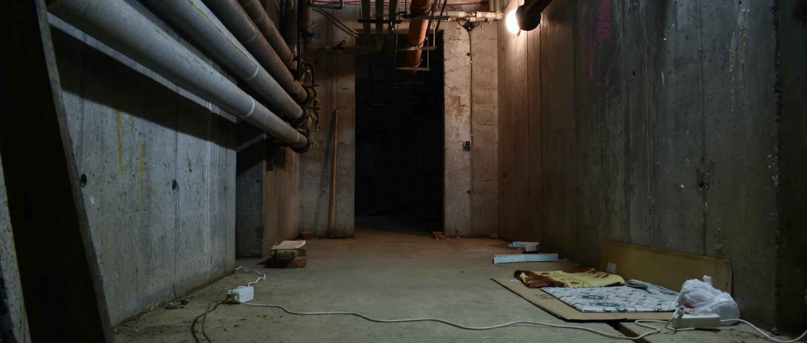

Le scénario classique : orage violent, la fosse se remplit… et Hydro tombe en panne. Votre pompe principale devient un presse-papier. La pompe de secours est ce qui sépare « une grosse soirée » d'un sous-sol fini à refaire. Deux technologies existent — voici laquelle choisir.
1Le face-à-face
| Critère | Pompe à batterie | Pompe à pression d'eau |
|---|---|---|
| Fonctionne pendant une panne | Oui, sur batterie | Oui, tant que l'aqueduc coule |
| Débit de pompage | Fort (proche d'une pompe principale) | Modéré — environ 2 L pompés par 1 L d'aqueduc consommé |
| Autonomie | Limitée : quelques heures à 2 jours selon la batterie | Illimitée |
| Prérequis | Espace pour la batterie, prise électrique | Aqueduc municipal obligatoire (jamais sur un puits) |
| Entretien | Batterie à tester et remplacer aux 3-5 ans | Presque aucun |
| Coût installé | 1 500 – 3 000 $ | 1 000 – 2 000 $ |
| Facture d'eau pendant l'usage | Aucune | Consomme de l'eau potable en continu |
2La pompe à batterie : la puissance, avec une date limite
Elle prend le relais automatiquement et pompe presque aussi fort que la principale. Son talon d'Achille : l'autonomie. Une panne de 3 jours après une tempête de verglas — ça existe, demandez à n'importe quel Québécois — peut épuiser la batterie avant le retour du courant. Et une batterie jamais testée depuis 5 ans est une batterie morte.
3La pompe à pression d'eau : increvable, mais plus lente
Elle utilise la pression de l'aqueduc municipal pour aspirer l'eau de la fosse — aucun moteur, aucune batterie, aucune limite de temps. En contrepartie, son débit est plus modeste : parfaite pour une infiltration régulière, elle peut être dépassée par une fosse qui se remplit à toute vitesse. Et elle consomme de l'eau potable tant qu'elle travaille.
4Notre verdict honnête
- Sous-sol fini + fosse qui travaille fort au printemps : pompe à batterie, pour le débit. Inscrivez le test de la batterie à votre calendrier saisonnier.
- Infiltration modérée + envie de dormir tranquille 15 ans : pression d'eau, pour la fiabilité sans entretien.
- Le luxe ultime : les deux — batterie en premier relais, pression d'eau en filet de sécurité. C'est ce qu'on installe dans les sous-sols qui ont déjà goûté à une inondation.
- Sur un puits artésien : la question ne se pose pas — batterie (la pompe à pression exige l'aqueduc).
Aucune pompe de secours ne sauve une pompe principale morte Le secours est un plan B, pas un remplacement. Commencez par le test du seau d'eau sur votre pompe principale — c'est gratuit et ça prend 10 minutes.
Blindez votre sous-sol avant le prochain orage.
On évalue votre fosse, votre débit d'eau et votre risque réel — puis on vous propose le bon système, pas le plus gros.